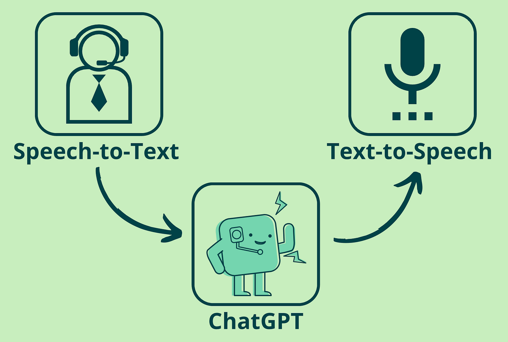

About Project
Markus is a personal assistant that was created to make your life easier. With the help of speech-to-text (STT) and text-to-speech (TTS) libraries, he can understand your words and reply to you with speech.
STT: The speech-to-text component of the project using the VOSK library.
The absence of Wi-Fi connectivity rendered this selection particularly advantageous.
EDGE-TTS: While EDGE-TTS may display a lower processing speed, it remains the optimal choice in terms of speech quality and operational efficiency.
ChatGPT: The integration of ChatGPT boosted the project's capacity to provide responses to various questions.
Features
Parcing: Markus is able to fetch various information from the Internet. For example - News,Weather Forecast
Multitasking: In addition to basic tasks, Markus is able to perform several tasks at once according to a given scenario
Personalization: Users can also add their personal options to already existing functions or even create own functions, modes and protocols
How to Use It
Just say "Markus" and then pronounce desired command or ask any question. It couldn't be simpler!